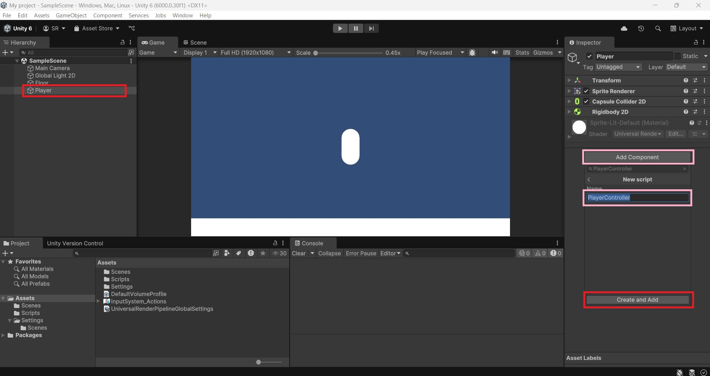
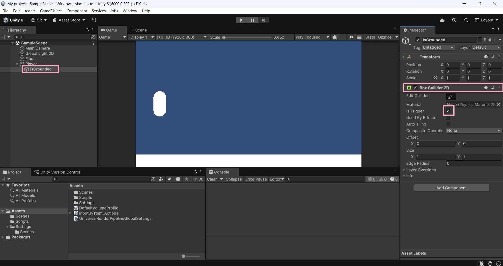
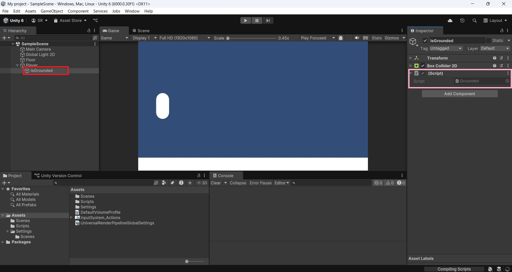
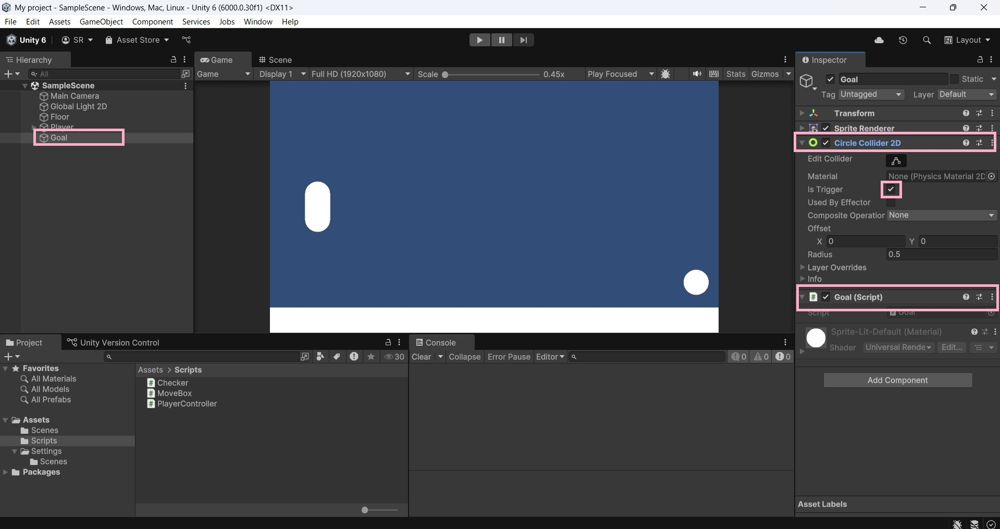
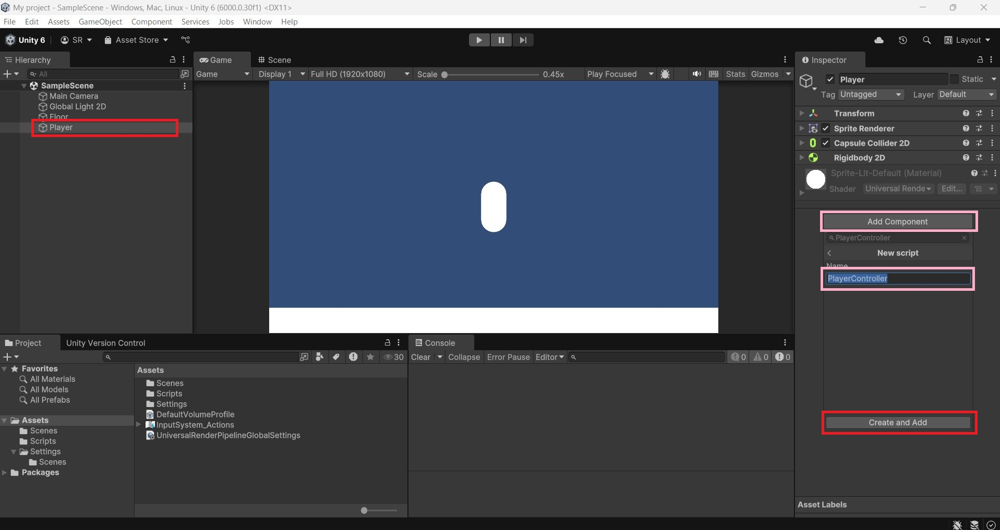
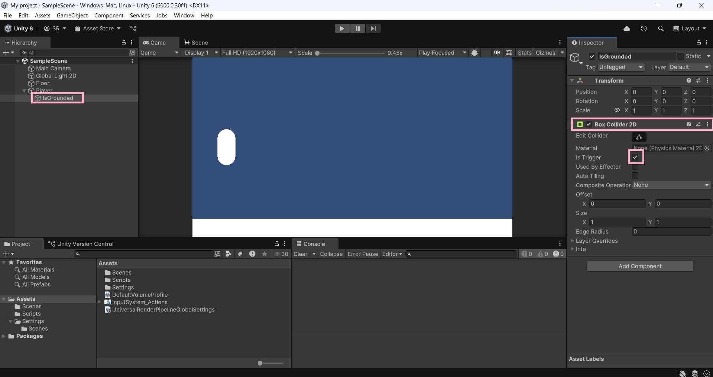
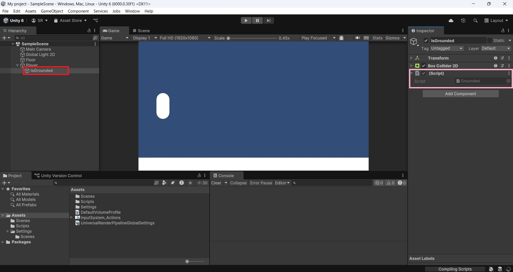
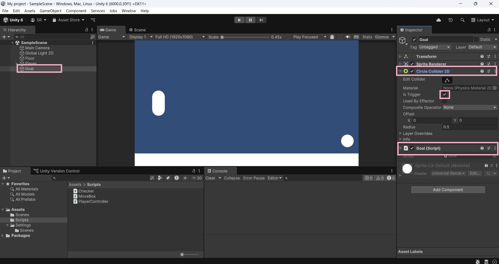

Unity Hubにログインをしよう！
 環境構築ができたらログインをしましょう！
環境構築ができたらログインをしましょう！
（アカウント作成がまだの方は[Sign
in]の下にある[Create
Account]でアカウントを作成しましょう！）
Unityプロジェクト作成①

プロジェクト作成②
ゲーム作成①
 画像と同じ画面になっていればOKです！
画像と同じ画面になっていればOKです！
ゲーム作成②

ゲーム作成③
プログラミングをしよう①

プログラミングをしよう②

ゲーム作成⑤

ゲーム作成⑥

ゲーム作成⑦

ゲーム実行

ゲーム作成⑧

ゲーム作成⑨
ゲーム作成⑩
ゲーム作成⑪
ゲーム作成⑫

ゲーム作成⑬

ゲーム作成⑭

ゲーム作成⑮

ゲーム作成⑯

ゲーム作成⑰

ゲーム作成⑱

ゲーム作成⑲

ゲーム作成⑳
接地判定

当たり判定

完成

以上。これでひとまずゲームを作る事ができました！
次はゲームを拡張するためのノウハウを書いていこうと思います！
それでは、お疲れ様でした！
※ご意見、ご要望などございましたら下記メールにてお願いします。
問い合わせメールはこちらまで
プロジェクト作成②
ゲーム作成①
画像と同じ画面になっていればOKです！ゲーム作成②
ゲーム作成③
プログラミングをしよう①
プログラミングをしよう②
ゲーム作成⑤
ゲーム作成⑥
ゲーム作成⑦
ゲーム実行
ゲーム作成⑧
ゲーム作成⑨
ゲーム作成⑩
ゲーム作成⑪
ゲーム作成⑫
ゲーム作成⑬
ゲーム作成⑭
ゲーム作成⑮
ゲーム作成⑯
ゲーム作成⑰
ゲーム作成⑱
ゲーム作成⑲
ゲーム作成⑳
接地判定
当たり判定
完成
以上。これでひとまずゲームを作る事ができました！ 次はゲームを拡張するためのノウハウを書いていこうと思います！ それでは、お疲れ様でした！
※ご意見、ご要望などございましたら下記メールにてお願いします。問い合わせメールはこちらまで